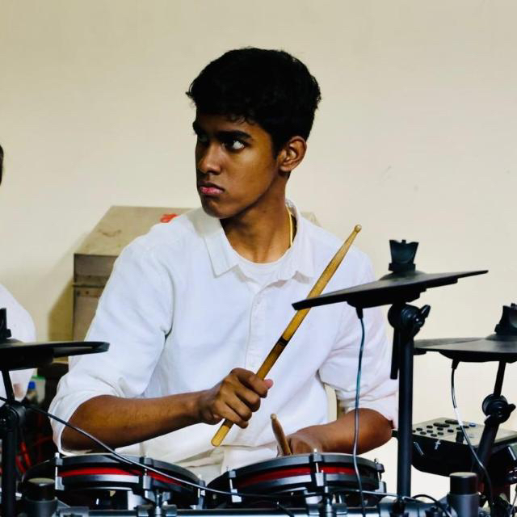

ABOUT
Hi! I’m Jason Samuel, a Computer Science and Engineering student at the University of Connecticut, passionate about using technology to create meaningful experiences. I built this website as a personal project to showcase my work and share stories from my peers—combining coding, design, and creativity to bring ideas to life.
I enjoy exploring all aspects of tech, from web development and programming to problem-solving and experimenting with new tools. Every project I take on is an opportunity to learn, grow, and push the limits of what I can create.
Beyond coding, I’m fascinated by how technology intersects with storytelling, education, and community. This site reflects my curiosity and my desire to connect with others, share ideas, and celebrate the work of people around me.
I’m always looking for ways to improve, collaborate, and take on challenges that expand my skills. Whether it’s building a new project, learning a new programming language, or simply sharing a story, I aim to combine creativity with practical skills to make an impact.
Humans of UConn
This project showcases a series of interviews conducted to capture diverse perspectives and personal experiences from individuals within our community. Through thoughtful questions and open conversations, we aimed to understand not only what people think, but why they think the way they do. Each interview highlights unique insights into personal values, challenges, aspirations, and lived experiences. By bringing together these different voices, this collection reflects the richness and complexity of individual stories. Ultimately, this project emphasizes the importance of listening, empathy, and meaningful dialogue in helping us better understand one another.
READ NOW

Jason Samuel
This essay explores how different readings and discussions about the university reveal tensions between intellectual growth and institutional pressures. By putting these perspectives into conversation, it examines patterns in student experiences, including the focus on achievement, the role of the “ivory tower,” and the balance between freedom and constraint. The essay also reflects on where these ideas align with or challenge personal observations, offering a more nuanced understanding of the possibilities and limitations of higher education.
This podcast explores how college education has evolved over time, focusing on changes in teaching styles, student experiences, and the overall purpose of higher education. Through a conversation between two students, it compares past and present college life, highlighting shifts in workload, classroom dynamics, technology use, and expectations for success. It also reflects on how these changes shape the way students learn, interact, and prepare for their future careers today.
Podcast Timestamps: Rethinking Education
0:00–0:25 — Intro
Welcome + introduce topic + guest
0:25–1:35 — Question 1: General Change
How college is different now vs. before
1:35–2:45 — Question 2: Accessibility
Who can attend college now vs. past
2:45–4:00 — Question 3: Cost and Pressure
Tuition, debt, and decision-making
4:00–5:15 — Question 4: Technology
Online learning, flexibility, downsides
5:15–6:30 — Question 5: Purpose of College
Career vs. personal growth
6:30–7:45 — Question 6: Personal Experience
Eddie’s perspective
7:45–9:00 — Question 7: Future of College
Predictions and changes ahead
9:00–9:30 — Outro
Wrap-up + thanks for listening
LISTEN NOW